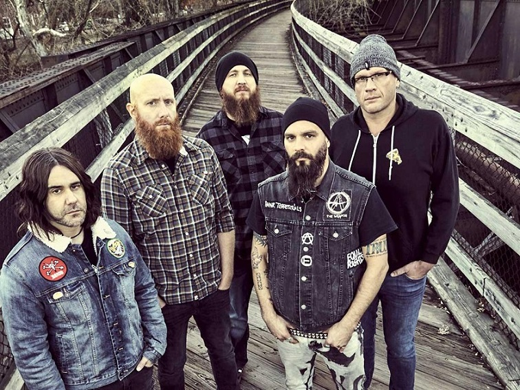

Zespół założony w 1999 roku w Huntington Beach w Kalifornii. Dwa pierwsze albumy to klasyczny metalcore, jednak później zespół zmienił swój styl i tworzy do dzisiaj muzykę z pogranicza heavy metalu i hard rocka. Nazwa zespołu nawiązuje do bibilijnej historii o Kainie i Ablu. A7X zadebiutowali w 2001 roku albumem "Sounding the Seventh Trumpet", który powstał gdy członkowie zespołu chodzili jeszcze do liceum. Późniejsze albumy studyjne zespołu to: Waking the Fallen(2003), City of Evil(2005), Avenged Sevenfold(2007), Nightmare(2010), Hail to the King(2013), The Stage(2016). Album"Nightmare" poświecony jest jednemu ze współzałożycieli zespołu (James Owen "The Rev" Sullivan), który popełnił samobójstwo 28 grudnia 2009 roku.
Obecny skład zespołu (od lewej): Synyster Gates - gitara prowadząca (od 2000); Johnny Christ - gitara basowa (od 2003); M.Shadows - wokal (od 1999); Zacky Vengeance - gitara rytmiczna (od 1999); Brooks Wackermann - perkusja (od 2015);
Zespół odwiedził Polskę tylko raz w swojej historii. Było to 4 czerwca 2014 roku w łódzkiej Atlas Arenie, podczas trasy promującej album "Hail to the King".
Zespół założony w 1998 roku w Bridgeng w Walii. Grupa miała początkowo nazwę "Jeff Killed John". Styl BFMV to klasyczny metalcore z elementami heavy metalowymi i ten styl był utrzymywany przez większość kariery. Dopiero najonwszy album "Gravity"(2018), jest o wiele lżejszy. Zespół zadebiutował w 2005 roku albumem The Poison. Później ukazały się jeszcze: Scream, Aim, Fire(2008), Fever(2010), Temper Temper(2013), Venom(2015), Gravity(2018).
Obecny skład zespołu (od lewej): Michael "Padge" Paget - gitara prowadząca (od 1998); Matthew "Matt" Tuck - wokal, gitara rytmiczna (od 1998); Jason Bowld - perkusja (od 2017); Jamie Mathias - gitara basowa (od 2015);
Bullet for my Valentine zagrało bardzo dużo koncertów w Polsce. Ostatni odbył się w krakowskim klubie Kwadrat, 6 sierpnia 2019 roku.
Zespół założony w 2004 roku w Brighton w Anglii, wykonujący metalcore. Zespół kilkakrotnie zmieniał nazwę. Działalność rozpoczął jako Inharmonic, lecz wkrótce został przemianowany na Counting the Days. Po kilku latach grupa przyjęła obecną nazwę. Architects zadebiutowali albumem "Nightmares" w 2006 roku. Następne albumy zostały wydane z innym, aktualnym wokalistą (Sam Carter): Ruin(2007), Hollow Crown(2009), The Here and Now(2011), Daybreaker(2012), Lost Forever // Lost Together(2014), All Our Gods Have Abandoned Us(2016), Holy Hell(2018).
Obecny skład zespołu (od lewej): Josh Middleton - gitara (od 2018); Adam Christianson - gitara (od 2015); Sam Carter - wokal (od 2007); Alex Dean - gitara basowa (od 2006); Dan Searle - perkusja (od 2004);
Architects praktycznie przy każdej europejskiej trasie odwiedzają Polskę. Ostatni raz zagrali w warszawskiej Stodole 1 lutego 2019 roku, na trasie promującej album "Holy Hell".
Australijski zespół, założony w 2003 roku w miejscowości Byron Bay. Nazwa zespołu pochodzi od ulicy, przy której mieścił się garaż, w którym zespół stawiał pierwsze kroki. Grupa wykonuje metalcore. Warto wspomnieć, że band występuje prawie w pierwotnym składzie, zmienił się tylko basista. Zadebiutowali w 2005 roku albumem Killing with a Smile. Następnie wydano: Horizons(2007), Deep Blue(2010), Atlas(2012), Ire(2015), Reverence(2018).
Obecny skład zespołu (od lewej): Ben Gordon - perkusja (od 2003); Winston McCall - wokal (od 2003); Luke Kilpatrick - gitara (od 2003); Jia O'Connor - gitara basowa (od 2006); Jeff Ling - gitara (od 2003);
Parkway Drive kilkukrotnie mieli okazję zagrać dla polskiej publiczności. Ostatni raz 2 sierpnia 2019 roku w Kostrzynie nad Odrą, na festiwalu Pol'and'Rock.
Zespół wykonujący metalcore z elementami heavy metalu oraz thrash metalu. Powstał w 1999 roku w Orlando na Florydzie. Nazwa grupy wywodzi się z języka łacińskiego. Trivium w okresie późnej starożytności oraz średniowiecza było, obok quadrivium, podgrupą siedmiu sztuk wyzwolonych. Obejmowało trzy nauki: gramatykę, retorykę oraz logikę. Członkowie zespołu uznają, że obrazuje to ich zainteresowanie różnymi gatunkami muzycznymi. Grupa zadebiutowała albumem Ember to Inferno wydanym w 2003 roku. Następnie wydano: Ascendancy(2005), The Crusade(2006), Shogun(2008), In Waves(2011), Vengeance Fall(2013), Silence in the Snow(2015), The Sin and the Sentence(2017).
Obecny skład zespołu (od lewej): Alex Bent - perkusja (od 2017); Matt Heafy - wokal, gitara (od 1999); Corey Beaulieu - gitara, scream (od 2003); Paolo Gregoletto - gitara basowa (od 2004);
Trivium często wraca do Polski. Ostatni koncert odbył się 26 czerwca 2019 roku w Krakowie na Mystic Festival.
Szwedzki zespół muzyczny wykonujący szeroko pojetą muzykę metalową. Powstał w 2008 roku w Linköping. Wokalista grupy posługuje się pseudonimem Papa Emeritus, natomiast instrumentaliści określani są mianem The Nameless Ghouls. Zespół zyskał na rozpoznawalności za sprawą wizerunku scenicznego oraz utrzymywania personaliów muzyków w tajemnicy. Debiutancki album formacji zatytułowany Opus Eponymous ukazał się 18 października 2010 roku. Następnie wydano: Infestissumam(2013), Meliora(2015), Prequelle(2018).
Ghost pomimo, że jest dosyć nowym zespołem, to zagrał już kilka koncertów w naszym kraju. Ostatni odbył się 30 listopada 2019 roku w katowickim Spodku.
Szwedzki zespół założony w 1990 roku w Göteborgu. In Flames razem z grupami Dark Tranquillity oraz At the Gates zapoczątkował nowy gatunek w muzyce znany obecnie jako melodic death metal. Łączny nakład sprzedanych albumów grupy przekroczył 2 000 000 egzemplarzy. Grupa zadebiutowała w 1993 roku, albumem Lunar Strain. Następnie wydano The Jester Race(1996), Whoracle(1997), Colony(1999), Clayman(2000), Reroute to Remain(2002), Soundtrack to Your Escape(2004), Come Clarity(2006), A Sense of Purpose(2008), Sounds of a Playground Fading(2011), Siren Charms(2014), Battles(2016), I, the Mask(2019). Podczas nagrywania albumu The Jester Race, Anders Fridén wraz z człowiekiem o imieniu Nicholas postanowił stworzyć symbol / maskotkę dla zespołu. Stała się nią głowa błazna (Jester Head).
Obecny skład zespołu (od lewej): Bryce Paul - gitara basowa (od 2017); Niclas Engelin - gitara rytmiczna (1997-1998, od 2011); Anders Friden - wokal (od 1995); Björn Gelotte - perkusja (1995 - 1998), gitara prowadząca (od 1998); Tanner Wayne - perkusja (od 2018).
Zespół wielokrotnie występował w Polsce. Ostatni raz 25 czerwca w Tauron Arenie w Krakowie na Mystic Festival 2019.
Amerykańska grupa muzyczna, stworzona w 1999 roku w Westfield w stanie Massachusetts, wykonująca metalcore, uważana za pionierów tego gatunku. Muzyka zespołu jest mocno zainspirowana przez scenę melodic death metalową. Grupa zadebiutowała w 2000 roku, albumem Killswitch Engage. Następnie ukazały się: Alive or Just Breathing(2002), The End of Heartache(2004), As Daylight Dies(2006), Killswitch Engage(2009), Disarm the Descent(2013), Incarnate(2016), Atonement(2019).
Obecny skład zespołu (od lewej): Mike D'Antonio - gitara basowa (od 1999); Justin Foley - perkusja (od 2003); Joel Stroetzel - gitara rytmiczna (od 1999); Jesse Leach - wokal (1999 - 2002, od 2012); Adam Dutkiewicz - perkusja (1999-2002), gitara prowadząca, wokal (od 2002);
Ostatni koncert Killswitch Engage w Polsce, odbył się 4 listopada 2019 w klubie Stodoła w Warszawie.
Brytyjska grupa rockowa założona w 1977 roku przez Marka Knopflera (gitara i śpiew), Davida Knopflera (gitara), Johna Illsleya (gitara basowa) i Picka Withersa (perkusja). Na muzykę Dire Straits wpłynęły różne gatunki, w tym jazz, folk czy blues. Pierwsze lata działalności zespołu przypadły na epokę gwałtownego wzrostu popularności punk rocka, z którym oszczędne, spokojne brzmienie Dire Straits, zbliżone raczej do roots rocka, zdecydowanie kontrastowało. Wiele z ich utworów cechowała melancholijność. Zespół rozwiązano w 1995 roku. W 2018 wprowadzony do Rock and Roll Hall of Fame.
Ostatni koncert zespołu w Polsce odbył się 11 sierpnia 1992 w Hali Olivia w Gdańsku, w ramach trasy promującej album "On Every Street". Trasa trwałą ponad dwa lata i przyczyniła się do rozwiązania Dire Straits.